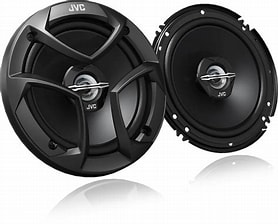

*1. Planificación:*
Antes de comprar cualquier equipo, planifica cuidadosamente la disposición del sistema en tu automóvil. Considera el espacio disponible, la ubicación de los altavoces y la colocación de los amplificadores. Esto garantizará una instalación ordenada y eficiente.
*2. Selección del equipo:*
Elige amplificadores, altavoces y subwoofers que se ajusten a tus necesidades y preferencias de audio. Asegúrate de que la potencia del amplificador sea compatible con los altavoces y subwoofers seleccionados para evitar daños.
*3. Herramientas y materiales:*
Reúne las herramientas necesarias, como destornilladores, conectores, cables y alicates. Asegúrate de tener el kit de instalación adecuado para tu automóvil, que incluirá cables de alimentación, tierra y cables de señal.
*4. Desconexión de la batería:*
Antes de comenzar la instalación, desconecta la batería del automóvil para evitar cortocircuitos y garantizar la seguridad durante el proceso.
*5. Instalación del amplificador:*
Monta los amplificadores en un lugar seguro y bien ventilado. Conecta los cables de alimentación, tierra y señal según las especificaciones del fabricante. Asegúrate de utilizar fusibles en la línea de alimentación para proteger el sistema eléctrico del automóvil.
TUTORIAL 1
*6. Cableado de altavoces:*
Conecta los altavoces y subwoofers utilizando cables de alta calidad. Asegúrate de que los cables estén enrutados de manera ordenada para evitar interferencias y daños.
TUTORIAL 2
*7. Ajustes y pruebas:
Una vez que todo esté conectado, ajusta los niveles de ganancia y ecualización en los amplificadores para obtener el sonido deseado. Realiza pruebas para asegurarte de que todos los componentes funcionen correctamente.
*8. Seguridad eléctrica:*
Revisa la instalación para garantizar la seguridad eléctrica y la integridad del sistema. Asegúrate de que todos los cables estén bien conectados y protegidos.
despues de asegurarte de que todo quedo bien tocara insatlar un extintor de emregensia tomando en cuenta que se genera temperatura en los amplificadores al traspaso de la corriente

En resumen, la instalación de un sistema de sonido con amplificadores en un automóvil requiere planificación, paciencia y atención a los detalles. Siguiendo estos pasos y las recomendaciones del fabricante, podrás disfrutar de un sistema de audio mejorado en tu vehículo.